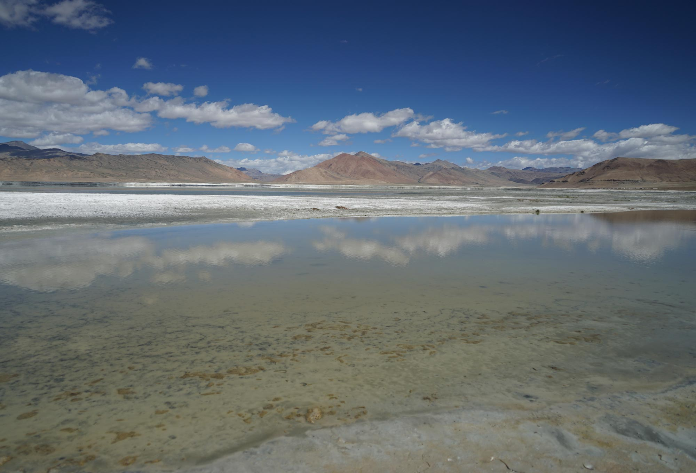
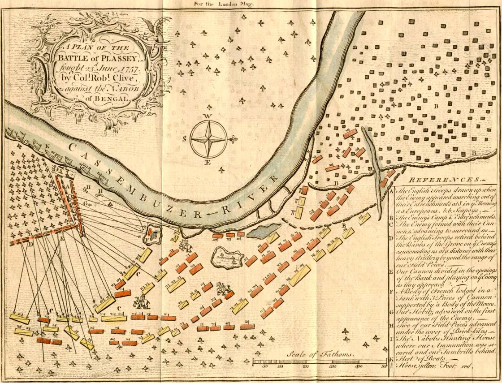
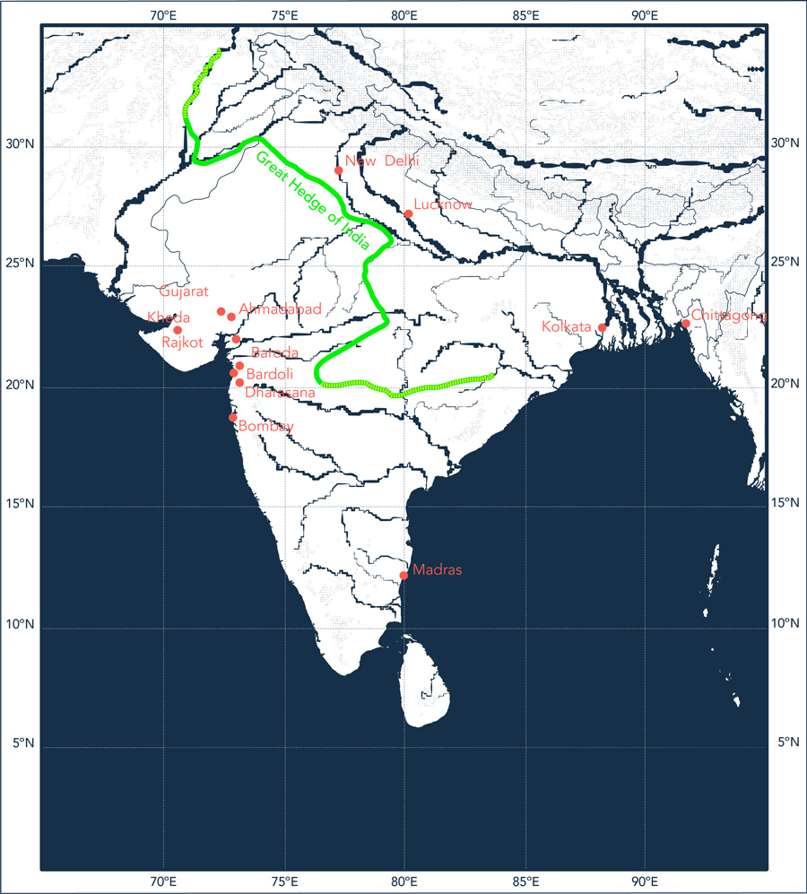
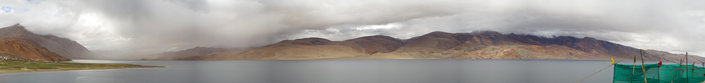

Matters and matterings
Year after year, as they sweep across the Indian terrain, the southwest and northeast monsoons act as architects of seasonal change. Like the monsoon itself, these changes are both material and social. A project of extremes, monsoonal heat and rain produce matter, labour, exploitation and resistance. Salt, one of monsoonal India’s oldest and most reliable resources, is one such material and social practice. Whether found in a geologic deposit or harvested as a seasonal fruit of the monsoonal sun, the need for salt, an indispensable ingredient of life, gave rise to colonial conquest and heralded the call to battle for independence.

Above: Tso Kar salt lake in Ladakh in the Himalayas, July 2018.
Salt, a monsoonal material
The seasonal passage of the southwest and northeast monsoons determines both the timeline and the bounty of India’s salt economy as it splits the arc of the sun’s annual march between the east and west coasts of the subcontinent. Tuned to the rhythms of the monsoons, the extraction of salt is aided by dry monsoon winds and their magnification by the pre- and post-monsoon sun. Today, India produces the third largest amount of salt in the world, an exponential growth since Independence in 1947.


Top: Aerial Image: Sambhar Lake.,
Rajasthan. Source: NASA, Public domain,
via Wikimedia Commons.
Bottom: Salt pans along the East Coast
Road south of Chennai.
Exploiting salt
In the wake of victory at the Battle of Plassey in 1757, the English East Indian Company (EEIC) gained control of the salt works near Kolkata. Two years later they imposed the first official Salt Tax on the works, doubling land rent and levying a transport tax on manufacturers and traders. After the Indian Rebellion a century later, the British Indian Government formalised the legal and physical infrastructures of salt management initiated by the EEIC with passing of the Salt Act of 1882.

Above: A plan of the Battle of Plassey, 23
June 1757. Depiction of the battlefield,
with explanations of troop movements.
Hand colored map from the London
Magazine, Public domain, via Wikimedia
Commons.
Left: Measuring labourers work and
storing salt at Sambhar Lake in the
Jaipur district of Rajasthan, 1875,
photographer unknown. Source: British Library, Shelfmark: Photo 355/1(59).
Isolating monsoons
“[T]he power to imagine has itself been colonised and dominated so that we understand the fundamental human impulse to be one of conflict rather than communal action”.1
Top Right: Map of the Inland Customs
line and the Great hedge of India as
it existed in the 1870s, after ‘Inland
Customs Line India’, Wikimedia
Commons.
Bottom left: The summer monsoon over
the Indian subcontinent (wheat season).
Bottom Right: The winter monsoon over
the Indian subcontinent (salt season).
The government monopoly of India’s salt trade was institutionalised by the construction of official salt depots and monitored transportation routes that impeded the rise of rogue producers and distributors. To reduce occurrence of illegal salt production and smuggling between districts, the British constructed an Inland Customs Line, otherwise known as the Great Hedge of India, which extended 2,500 miles from the north of Punjab to the western boundary of Orissa, effectively segregating the salt production of the southwest monsoon from that of the northeast.


In solidarity with the winds
Barring a brief period from 1694 to 1825, the British public viewed salt taxation as a violation of human rights and unfairly levied against low-income populations. Yet, according to the Salt Tax, it was illegal for anyone who was not an authorised British national to collect and produce salt in India. In 1930 Mahatma Gandhi led a small band of Indian nationals from his hometown Ahmedabad to the coastal village of Dandi. Upon reaching the sea, he reached down and scooped a handful of salt from the sand. This was a direct violation of British Law in India and an act that stoked the fires of Independence.

Gandhi at Dandi, South Gujarat, picking salt on the beach at the end of the Salt March, 5 April 1930. http://www. calpeacepower.org/0101/images/1930- pick-salt-GS_BG.jpg
Salt, a more-than-social mattering
Gandhi’s Salt March was not only an act of resistance, but an experiment with the materiality of the monsoon. His act was material and social at once, like the monsoon itself. It led to the abolishment of the Salt Tax in October 1946. Without maintenance, the Great Hedge faded into the desert and the winter and summer monsoon salt harvests were joined once again.
Panorama of the monsoon at the top of the world, Tso Moriri, Ladakh.
“What if we approach social movement action not as targeting existing political power but as experimenting with worlds? What if we see social movement action not as addressing existing institutions for redistributing justice but as the creation of alternative forms of existence that reclaim material justice from below? And, what if this becomes possible not when social movements engage in resistance to power but when they experiment with the materiality of life?”2
1 N. Mirzoeff, “Visualizing the Anthropocene”, Public Culture,
vol. 26, no. 2, 2014, p. 219.
2 D. Papadopoulos, Experimental Practice: technoscience,
alterontologies, and more-than-social movements, Durham
NC, Duke University Press, 2018, p. 3.
Text by Christina Leigh Geros.
Design by Jonathan Cane.
Matters and matterings
Photographs by Christina Leigh Geros.
Video by Lindsay Bremner, edited by Christina Leigh Geros.
Salt, a monsoonal material
Photographs by Beth Cullen.
Video by Lindsay Bremner, edited by Christina Leigh Geros.
Isolating monsoons
Drawings by John Cook and Christina Leigh Geros.
Sources: Aerial Imagery: NASA Blue Marble Imagery; Topography
+ Bathymetry: ETOPO1 Global Relief Model; Climatic Data:
NOAA/NCEP CFSv2 Climate Forecast System + NASA Earth
Observations; Wikimedia Commons.
Salt, a more-than-social mattering
Panorama by Christina Leigh Geros.